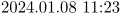

| Top: System Macros | Next: Mnemonics & Aliases >
Contents
The ConTeXt version
Even though ConTeXt does not have a rigid versioning interface, there are a few macros that deal with versions.
\contextversion contains the ConTeXt version string. If you need to make sure you are running under ConTeXt, check for this macro. This macro is not defined in syst-gen.tex, but in context.tex, because syst-gen.tex is sometimes loaded under LaTeX, and it would be bad to define \contextversion in that case. The expansion of the macro
- 
\fmtname is defined at the same time, and it always expands to
\contextformat is also defined at the same time, and it contains the name of the current format. The expansion of the macro
\contextmark is also defined in context.tex, and it contains the ConTeXt major release marker. You can read more on this internal versioning marker in ConTeXt, mkii & mkiv. The expansion of the macro
\contextversionnumber is defined in mult-ini.tex, by interpreting \contextversion and attaching the \contextmark. The expansion of the macro
\newcontextversion is the last macro in this section. It is set in cont-new.tex, the file that is read in at runtime. This macro is a security measure: its content is compared with the value of \contextversion that was stored in the format file, and if the two do not match up, the job is aborted.
Conditional execution of engine-specific code
In syst-prm.tex, a few macros are defined that can be used to delimit code that uses engine-specific features. \beginTEX and \beginETEX are mutually exclusive, depending on whether or not the format file was compiled under an e-TeX-enabled executable. In the latest ConTeXt releases, this will always imply using the \beginETEX code, because e-TeX availability has recently become a requirement for ConTeXt. The macros will stay, however, because bits and pieces of ConTeXt are used in formats like LaTeX and MPtoPDF, that are not necesarily e-TeX.
A typical way of setting up your code to use e-TeX is like this:
\beginTEX \def\ifundefined#1% {\expandafter\ifx\csname#1\endcsname\relax} \endTEX \beginETEX \ifcsname \def\ifundefined#1% {\unless\ifcsname#1\endcsname} \endETEX
Code delimited by \beginOMEGA ... \endOMEGA is only executed if ConTeXt runs under Aleph.
Code within \beginXETEX ... \endXETEX is only run when XeTeX is used.
Experimental code for LuaTeX can be put between \beginMETATEX ... \endMETATEX.
An optional argument after the \begin... can be used to give some more information to the viewer: the example above will print the following string to the terminal:
system (E-TEX) : [line 833] \ifcsname
Guard against double-loading of input files
Sometimes, macro or layout definition files can be used from within various contexts inside a single typesetting run. If that is the case, it can come in handy to be able to prevent macro files from being loaded more than once. This can be done using:
\abortinputifdefined\command
where \command is a command defined in the module to be loaded only once.
For example, syst-gen.tex implements \writestatus, and therefore it could start with:
\abortinputifdefined\writestatus
Normally, you don't need this macro at all, it is purely intended for files that are loaded via the TeX primitive \input.
\usemodule does its own bookkeeping, and combining it with \usetypescriptfile is generally not a good idea.
Protecting internal macros
We can shield macros from users by using some special characters in their names. Some characters that TeX normally does not consider to be letters (and are therefore used for this purpose) are: @, ! and ?. Before and after the definition of protected macros, we have to change the <catcode> of these characters. This is done by \unprotect and \protect, for instance:
\unprotect \def\!test{alfa} \protect
The newly defined command \!test can of course only be called upon when we are in the \unprotect'ed state, otherwise TeX reads the command \!, followed by the word test and probably complains loudly about not being in math mode.
General purpose low-level commands in the ConTeXt core sometimes contain one or more @ signs.
Temporary values and definitions often start with two ! markers, and macros that represent internal strings normally start with a single letter followed by a single exclamation mark, for example: \v!off stands for the meaning of off in the current interface language. More on this convention can be read in Scratch Variables.
Prefixes for parameter list assignments start with two ? markers, like \??ly. This is explained in Key Value Assignments.
The protection and unprotection commands can be nested (unlike \makeatletter in LaTeX). This nesting ability is a convenience, since it allows one to use the protection pair regardless of whether protection is already turned on. It is a very good habit to always start your macro files with \unprotect and end them with \protect, even if you don't need to access internal commands right away.
| Top: System Macros | Next: Mnemonics & Aliases >